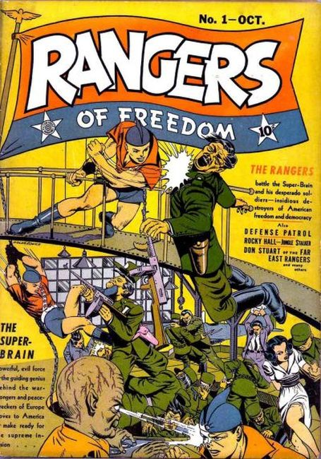
7 issues as "Rangers of Freedom", 58 issues as "Rangers Comics", 4 issues as "Rangers" = 69 issues from 1941 to 1953 by Fiction House
×
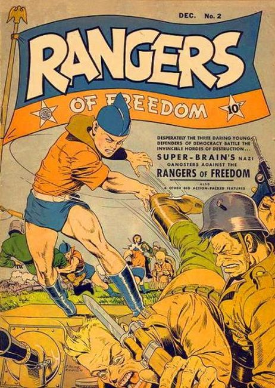
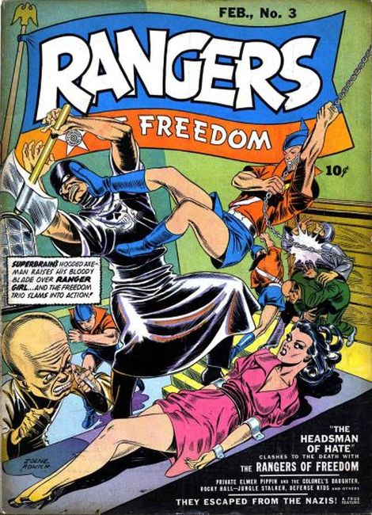
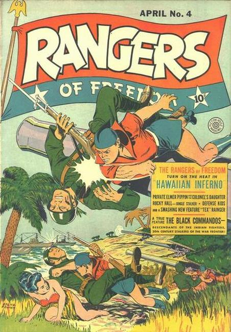
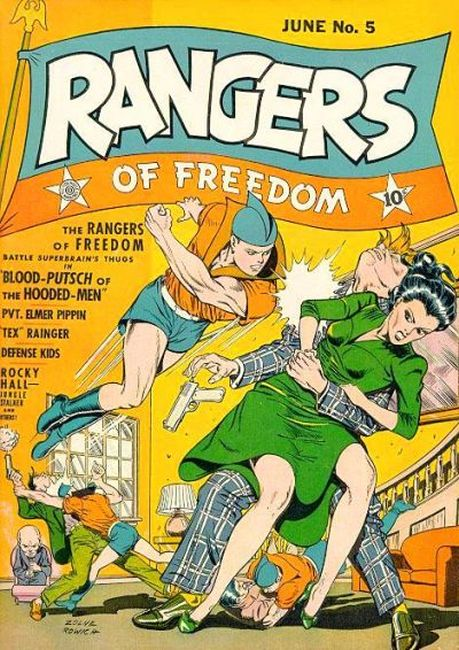
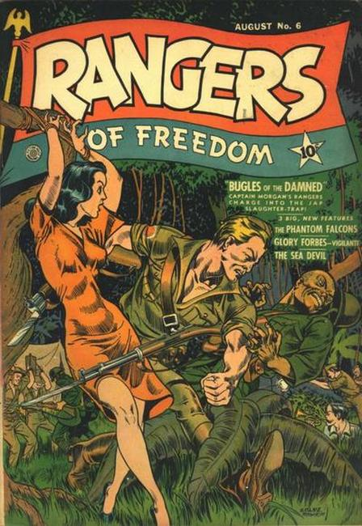
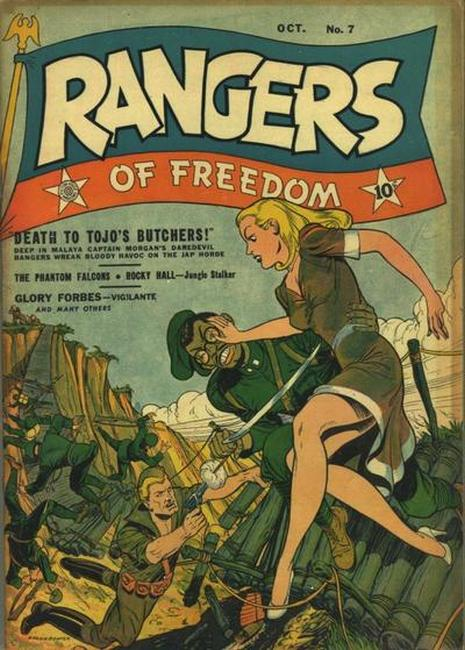
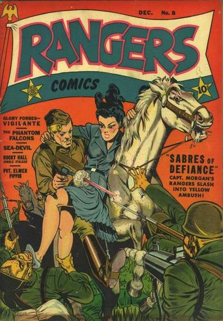
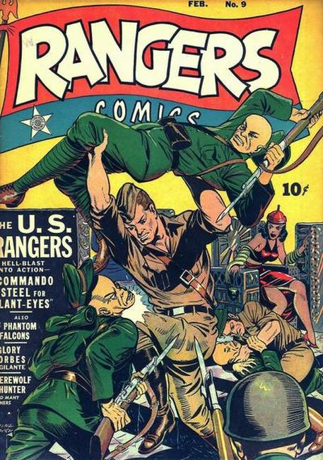
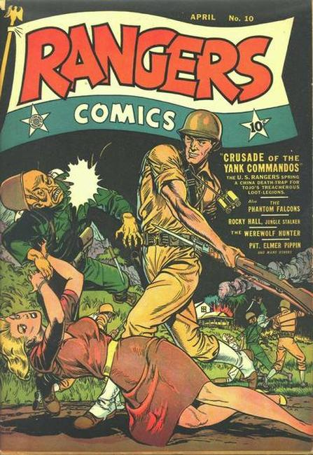
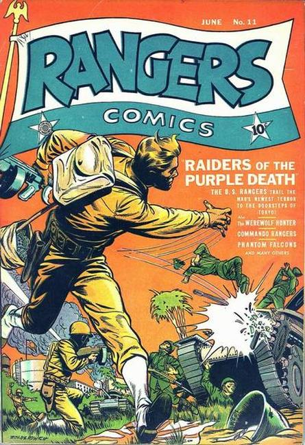
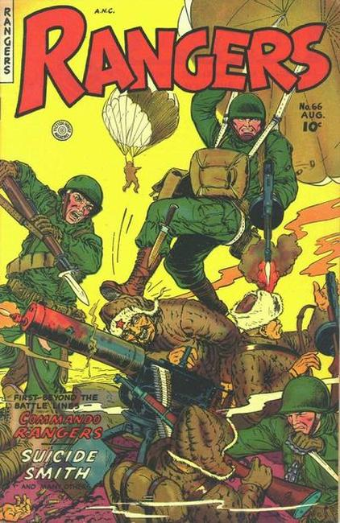
❮
❯
Issue #1 Cover by Dan Zolnerowich. 64 pages, color, cover price $0.10.
Stories and art by Joe Doolin, Bob Jenney, and Don Lynch. Sometimes listed as Rangers of Freedom Comics #1. Tales of adventure from pioneering comics publisher Fiction House. Teens Biff, Tex and Percy are enlisted by the government to become the "Rangers of Freedom," because only teen minds can resist the mind-controlling villain called the Super-Brain.
For their first case, the Rangers of Freedom must resist Super-Brain's demands that they kidnap the President.
Jungle Jim-like explorer Rocky Hall joins forces with the wild jungle boy called Gay-Ree.
Also appearing: The Royal Watch, Defense Patrol, Jeep Milarkey, The Anzac Hawks, Rocky Hall, Jungle Stalker, The Sea Squad, Don Stuart of the Far East Rangers.